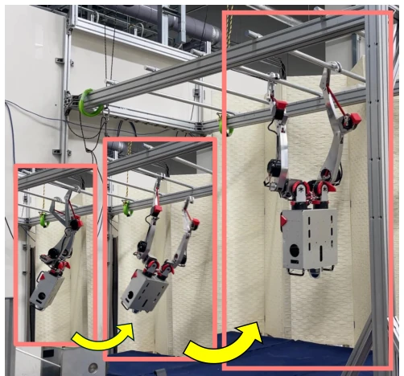
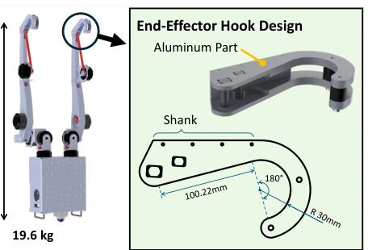
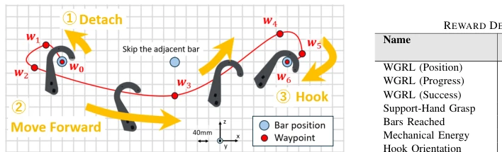
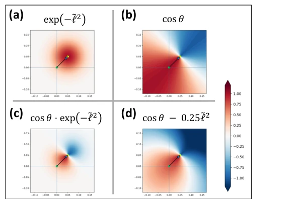
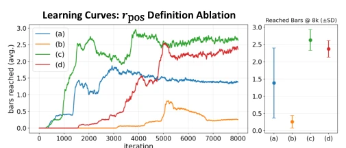
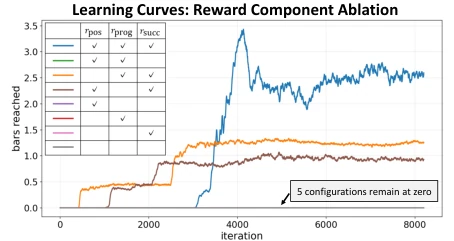
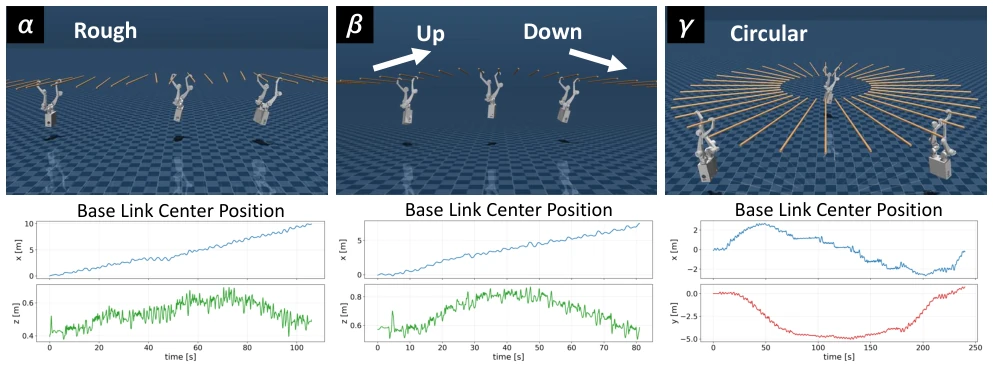
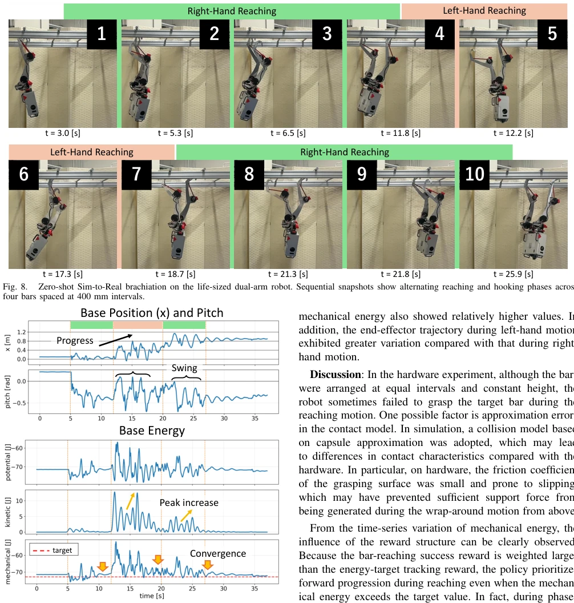
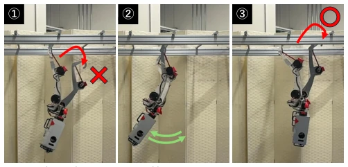

This paper delivered a lesson to the embodied AI community: do not always focus on agile legged robots; the 'ape-man' mode with arms suspended in the air is actually harder to handle. The authors did not employ fancy end-to-end large models, but instead utilized a 'waypoint' reinforcement learning (WGRL) system to successfully mount a life-size bipedal robot onto the horizontal bar. The highlight lies in its lack of reliance on expensive motion capture data, nor expectation of a god's-eye view for the robot; relying purely on reward functions and sparse waypoint guidance, it trained a 'hardcore' recovery strategy of 'swing wildly to find an opportunity if you cannot grab'. However, the criticisms are also obvious: asymmetry in left and right hand movements, where the strategy with random starting points during training led to one side being skilled while the other was 'clumsy', and it completely relies on passive fault tolerance of the hook structure; once the gripper is changed, it may have to start over. This counts as pushing the 'violent aesthetics' of RL in the real physical world to the extreme, but whether the generalization is really as strong as the authors boast remains to be seen with more tests in unstructured environments.
Primates can freely shuttle on horizontal bars without footholds (Brachiation), which greatly expands the mobile space, but replicating this action on robots is as hard as climbing to heaven. Existing research mostly relies on model-based control (such as energy control or virtual holonomic constraints) [6]-[10]; although these methods are theoretically elegant, once contact conditions are uncertain or subjected to disturbances, robustness is significantly compromised. Although there have been recent RL attempts, most are limited to simulation or small robots [11][12]. There are two main bottlenecks: first, reward function design is extremely difficult, lacking mature guiding principles like walking, and simple distance or velocity rewards fail to capture complex nonlinear dynamics; second, there is a lack of high-quality imitation learning data (such as full-body trajectories required by DeepMimic[13]), leading to inability to transfer directly. More fatally, once arms are suspended in the air, failure means falling; hardware experiments carry extremely high risks, causing many studies to stop at simulation. This paper aims to solve these pain points, achieving robust hanging motion on a life-size robot.

Fig. 1. Brachiation motion of a life-sized dual-arm robot traversing four cylindrical bars (30 mm in diameter) arranged at 0.4 m intervals.

Fig. 2. Mechanical design of the life-sized dual-arm robot. Left: Overview of the robot, modeled after the upper body of an adult human. Right: Hook-shaped end-effector designed for secure bar suspension and robust brachiation.
The core proposes a 'Waypoint-Guided Reinforcement Learning' (WGRL) framework. The overall process is divided into two stages: first train basic motion patterns using WGRL in simulation, then adjust reward weights for fine-tuning training, and finally zero-shot transfer to the real machine. The innovation of WGRL lies in guiding the end-effector trajectory using sparse waypoints, rather than directly imitating full-body actions. Specifically, the system defines 5 key waypoints (as in Fig. 3), guiding the manipulator to first detach backward, then pass forward, and finally hook the target from above. Reward function design is the essence: it includes position guidance (rpos), progress reward (rprog), and success reward (rsucc), where rpos combines distance and direction cosine similarity to ensure approaching from the correct angle. In addition, a Mechanical Energy reward is introduced to suppress excessive swinging and ensure stability after grasping. Training uses the PPO algorithm, gradually relaxing waypoint thresholds through Curriculum Learning, transitioning from strong guidance to free exploration. This design enables the robot to spontaneously learn complex nonlinear hooking trajectories and recovery strategies after failure without full-body reference data.

Fig. 3. Waypoint design for inducing non-linear hooking trajectories in WGRL. The reaching hand is guided to detach, move forward beneath the bars while avoiding the support-hand bar, and hook onto the target bar from above.

Fig. 4. Reward field visualization for different definitions of rpos. (a) distance-only, (b) direction-only, (c) multiplicative distance–direction coupling, and (d) additive distance–direction formulation. The formulation (c) and (d) encourage the end-effector to approach the target from the direction of the previous waypoint.

Fig. 5. Learning curves for rpos definition ablation. The vertical axis plots the number of bars reached since the start of each episode, averaged over all parallel environments. Each curve represents the mean of three independent training runs. The right panel shows the mean and standard deviation at 8000 iterations. Reward formulations incorporating both distance and directional alignment yield higher performance and more consistent convergence result.

Fig. 6. Learning curves for reward component ablation in WGRL. The horizontal axis indicates training iterations, and the vertical axis shows the number of bars reached since the start of each episode, averaged over all parallel environments. Brachiation behavior emerges only when all three reward components are combined, or when paired with the success reward.
Experiments were conducted on MuJoCo simulation and life-size dual-arm robot hardware. Simulation tested three unseen environments: geometric perturbation (±40mm/±0.2rad), 5-degree slope, and circular path; results show the robot can continuously cross 30+ horizontal bars and achieve recovery by increasing swing amplitude after failure (Fig. 7). Hardware experiments adopted zero-shot transfer, successfully completing 3 grasping attempts in a 4-bar environment; although the first attempts all failed, the robot could trigger the recovery mechanism and successfully grasp (Fig. 8, Fig. 9). Ablation experiments show that using only distance or direction rewards leads to learning stagnation or unstable convergence; all three must be combined (Fig. 5, Fig. 6). It was found that there is asymmetry in left and right hand movements, with the right side being better, attributed to convergence differences caused by random training initial states.

Fig. 7. Sim-to-Sim evaluation in MuJoCo under diverse monkey bars configurations. The learned policy is tested in three unseen environments: (α) geometrically perturbed bars, (β) a 5° inclined up–down course, and (γ) a circular course. The lower plots show the base link center position over time, demonstrating sustained forward progression despite environmental variations.

Fig. 9. Hardware experiment logs during zero-shot Sim-to-Real brachiation. The top plot shows the forward base link position and pitch angle, indicat- ing forward progression through repeated swinging motions. The bottom plot presents the base energy. During hooking failures, swing momentum increases, resulting in progressively higher kinetic energy peaks that enable reattempts. Once stable dual-hand support is established, the mechanical energy decays and converges toward the target value.

Fig. 10. Failure recovery behavior during hardware brachiation. After an initial hooking failure, the robot increases swing amplitude to build momentum and successfully reattempts bar engagement, preventing fall and enabling continued progression.